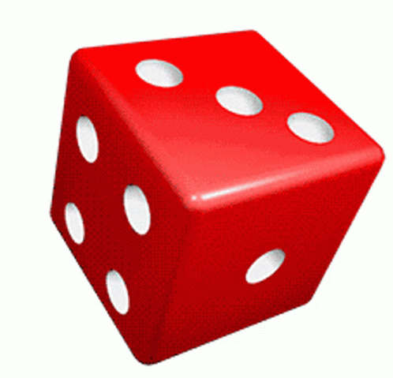

Trotugame
Vidas: 5

Reglas:
-Cada número del dado representa una pieza de la tortuga.
-Si el dado muestra un número ya pintado, se despintará la pieza y perderás una vida.
-En caso de que el dado muestre un número recién pintado, la pieza se bloqueará y no perderás vidas en ese número.
-Pinta todas las piezas de la tortuga para ganar el juego.